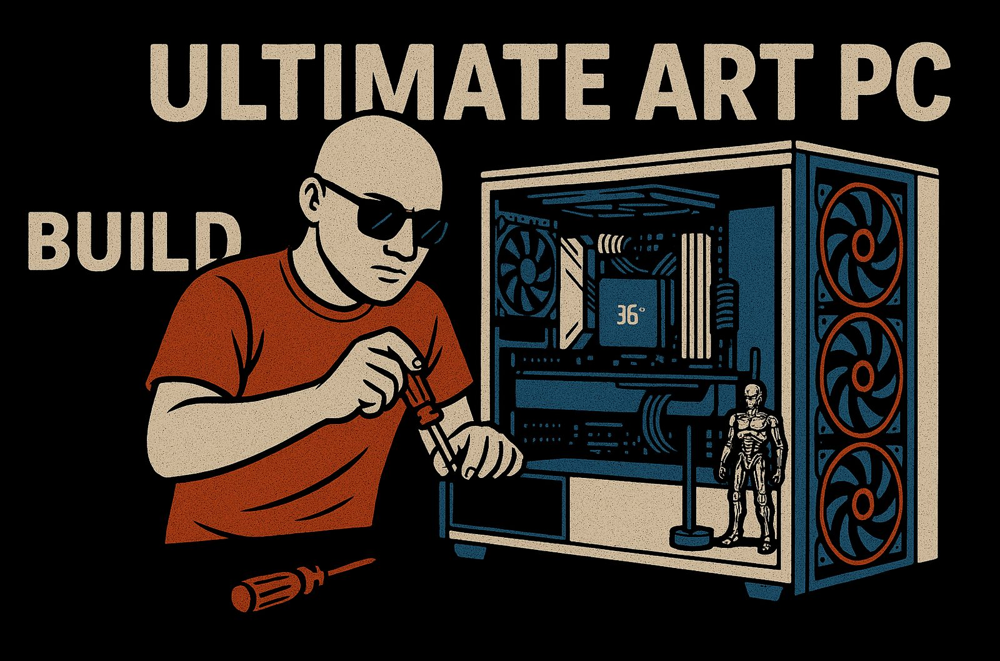
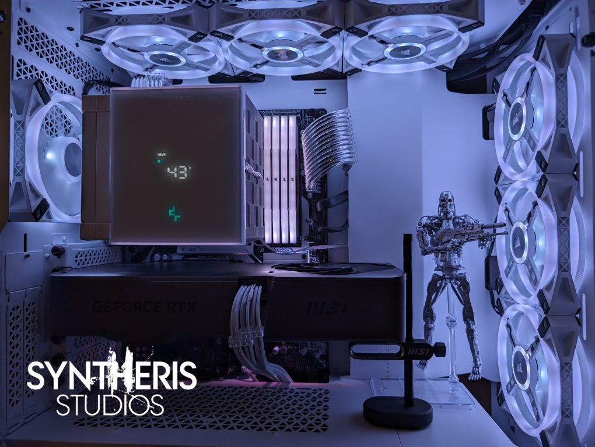

A Deep Dive into My High-Performance Custom PC Build: Powering Generative AI, Media Management, and Creative Workflows
Your guide to building a stylish, effective and powerful PC workstation for generative Ai work: Everything You Need to Know.

My High-Performance Custom PC Build: Powering Generative AI
In the world of high-performance computing, my custom PC build stands out as a remarkable blend of power, efficiency, and style. Housed in the sleek CORSAIR iCUE 5000X RGB QL Edition Mid-Tower Case in True White, my workstation is designed to tackle demanding tasks like Generative AI with local models, managing and backing up thousands of images and video files, and running digital art and video editing software with exceptional speed. Through the tempered glass side panel, I can see the meticulously assembled array of top-tier components, illuminated by seven CORSAIR QL Series iCUE QL120 RGB 120mm fans, and featuring a unique hand-painted chrome Terminator exoskeleton figure as a striking centerpiece. Let’s explore how each component contributes to its capabilities and why this build is a powerhouse for professionals and enthusiasts alike.
Core Components and Their Roles
CPU: Intel® Core™ i9-14900K
At the heart of my build is the Intel® Core™ i9-14900K, a 24-core processor (8 performance cores + 16 efficiency cores) with a massive 36MB cache and clock speeds reaching up to 6.00 GHz via Intel Turbo Boost Max Technology 3.0. This CPU is a multi-threading monster, making it perfect for:
- Generative AI: Training and running local AI models require immense computational power. The i9-14900K’s high core count and clock speeds excel at parallel processing, enabling efficient handling of complex algorithms and large datasets.
- Media Management: Managing thousands of images and videos involves rapid data processing, which benefits from the CPU’s ability to handle multiple tasks simultaneously.
- Creative Workflows: Rendering 4K or 8K video and complex digital art in tools like Adobe After Effects or Blender is seamless with this processor’s performance.
Paired with the DeepCool AK620 Digital WH CPU cooler, featuring dual 120mm PWM fans and a robust heatsink, my CPU stays cool and stable even during prolonged, resource-intensive tasks.
GPU: MSI™ GeForce RTX™ 4080 SUPER 16G EXPERT
My MSI™ GeForce RTX™ 4080 SUPER with 16GB of GDDR6X memory is a top-tier graphics card built on NVIDIA’s Ada Lovelace architecture. Its Tensor Cores and exceptional ray tracing capabilities make it a standout for:
- Generative AI: The RTX 4080 SUPER accelerates AI model training and inference, leveraging its Tensor Cores for tasks like text-to-image generation or audio synthesis. The 16GB VRAM supports large, memory-hungry models without stuttering.
- Creative Workflows: Real-time 4K video editing, 3D rendering, and ray-traced visuals in software like DaVinci Resolve or Unreal Engine run smoothly, thanks to its raw graphical power.
- Media Management: While less directly involved, the GPU aids in accelerating encoding/decoding processes for video files.
I can see its sleek black and silver design in my case, making it both a visual and functional highlight.
RAM: 64GB VENGEANCE® DDR5 DRAM 6400MT/s
With 64GB of VENGEANCE® DDR5 RAM running at 6400MT/s, my build ensures lightning-fast memory performance. DDR5’s higher bandwidth and lower latency compared to DDR4 are critical for:
- Generative AI: Large datasets and models often demand substantial RAM. 64GB prevents bottlenecks, allowing smooth operation during training and inference.
- Media Management: Multitasking across applications while managing and backing up thousands of files is effortless with this capacity and speed.
- Creative Workflows: Running memory-intensive apps like Photoshop with massive PSD files or After Effects with multiple compositions benefits from the ample, high-speed RAM.
The tall DDR5 modules, slotted into my motherboard, are both functional and visually striking.
Motherboard: ASROCK Z790 PRO RaceSport WIFI
My ASROCK Z790 PRO RaceSport WIFI motherboard provides a robust foundation with PCIe 5.0 support, multiple M.2 slots, and integrated Wi-Fi 6E. Its contributions include:
- Stability: Reliable power delivery ensures all components perform optimally under load.
- Expandability: Multiple M.2 slots support my extensive storage array, while Wi-Fi 6E offers fast connectivity for cloud backups or remote workflows.
- Performance: Overclocking potential unlocks even more power from the CPU and RAM.
Its sleek design complements the white aesthetic of my build, subtly visible behind the CPU cooler.
Storage: A 14TB Powerhouse
Storage is a standout feature in my build, with a total of 14TB across multiple drives:
- Primary Drive: A 2TB WD BLACK SN850X NVMe SSD (up to 7,300 MB/s) delivers blazing-fast boot times, application loading, and data access for active projects.
- Upgrade Drives: Two Crucial P3 Plus 4TB NVMe SSDs (up to 5,000 MB/s) and two Crucial BX500 4TB SATA SSDs (up to 540 MB/s) provide massive capacity.
This setup excels for:
- Media Management: 14TB easily archives thousands of high-resolution images and video files, with NVMe drives for active editing and SATA drives for backups.
- Generative AI: Fast storage speeds up dataset loading and model checkpoints, while the capacity supports extensive AI libraries.
- Creative Workflows: Quick access to large project files enhances efficiency in video editing and digital art.
Cooling and Power
- Cooling: The DeepCool AK620 Digital WH CPU cooler and seven CORSAIR QL120 RGB fans (six intake, one exhaust) create a positive pressure system, ensuring low temperatures during extended AI training or rendering sessions. The digital display on the cooler provides real-time temperature feedback, which I find incredibly useful.
- PSU: My Corsair RM850x 850W 80 PLUS Gold PSU delivers stable, efficient power. Its fully modular design aids in clean cable management, which I can see through the glass panel, enhancing both airflow and aesthetics.
Operating System: Windows 11 Pro
Running on Windows 11 Pro, my PC benefits from a modern OS optimized for professional workflows, with advanced security features and support for cutting-edge software.
Visual Design: A Work of Art
My CORSAIR iCUE 5000X case in True White exudes a clean, futuristic vibe, with its tempered glass side panel showcasing the internals. The seven RGB fans, synchronized via iCUE software, cast a dynamic purple and white glow, creating an immersive light show. I added a unique touch with a hand-painted chrome Terminator exoskeleton figure, mounted on a stand inside the case. Its metallic sheen reflects the RGB lighting, adding a cinematic flair that I love. Meticulous cable management and strategic component placement reflect my dedication to both form and function.

Why My Build Excels
- Generative AI: The i9-14900K’s multi-core prowess, RTX 4080 SUPER’s Tensor Cores, and 64GB DDR5 RAM combine to train and run local AI models efficiently, with 14TB of fast storage for datasets.
- Media Management: The massive, tiered storage array and high-speed RAM handle thousands of files with ease, ensuring quick backups and access.
- Creative Workflows: High core counts, GPU power, and fast memory deliver smooth performance in tools like Premiere Pro, Photoshop, and Blender, even at 4K or 8K resolutions.
Conclusion
My custom PC is a powerhouse tailored for cutting-edge tasks. With top-tier components like the Intel i9-14900K and MSI RTX 4080 SUPER, along with expansive storage and cooling solutions, it’s an exceptional workstation for Generative AI, media management, and creative editing. The stunning visual design, featuring RGB lighting and my unique Terminator figure, transforms it into a work of art as much as a tool of productivity. Whether I’m generating AI art, archiving my vast media library, or producing high-quality videos, this build delivers unparalleled speed, efficiency, and style.